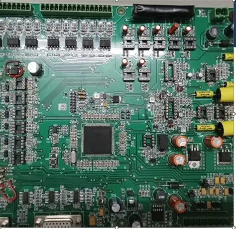
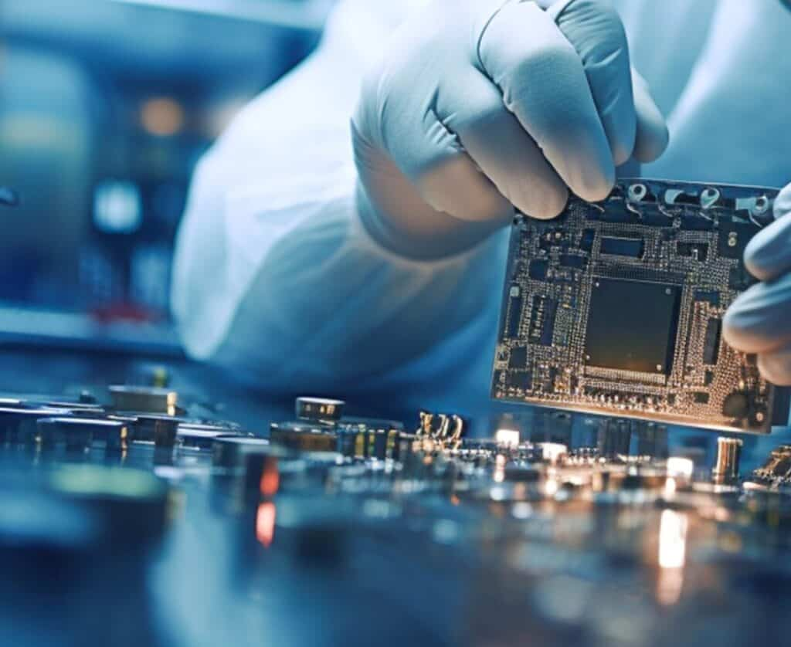
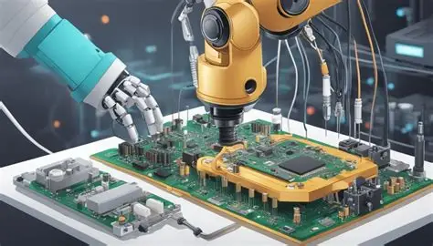
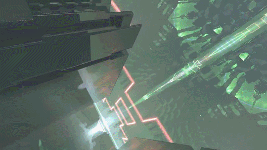
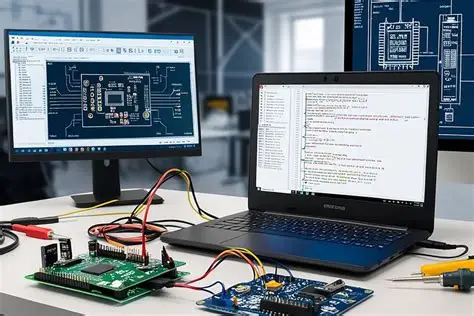

01Digital products
</>
Software
products
From a sharp first prototype to a product your customers love to use.
- Apps & web platforms
- Tools & custom programs
- Brand systems & graphic design
const possibility = build(together);Software + hardware engineering studio
We turn ambitious concepts into dependable digital products, connected devices, and intelligent spaces. One thoughtful build at a time.
01 From first sketch to final system
What we build
The best solutions live between disciplines. We bring product thinking, engineering rigor, and a practical bias for action to every project.
From a sharp first prototype to a product your customers love to use.
const possibility = build(together);Diagnose, repair, and improve the hardware at the heart of your idea.

Connect sensors, machines, and spaces so they can work smarter together.



A closer look
Every layer of the work gets a point of view: the board, the interface, the signal, and the space around it.
Our approach
Clear thinking, honest communication, and a build process designed to keep momentum on your side.
We start with the problem, not the preferred solution.
Prototypes reveal what conversations cannot. We get something in your hands early.
Solid foundations, considered details, and a system ready for what comes next.

Why iBOY-TECH
We are a multidisciplinary engineering studio for people who want to make something meaningful and make it work in the real world.
Have a challenge?
Tell us what you’re thinking. A rough sketch, a broken board, or a big question is a good place to start.
Start a conversation ↗Prefer a technician chat? Message our team